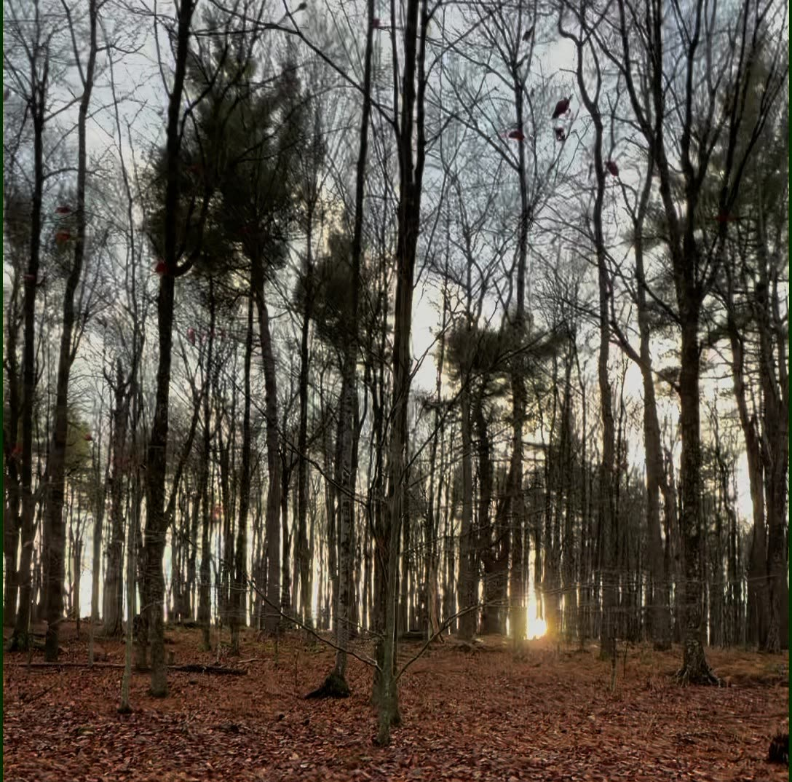
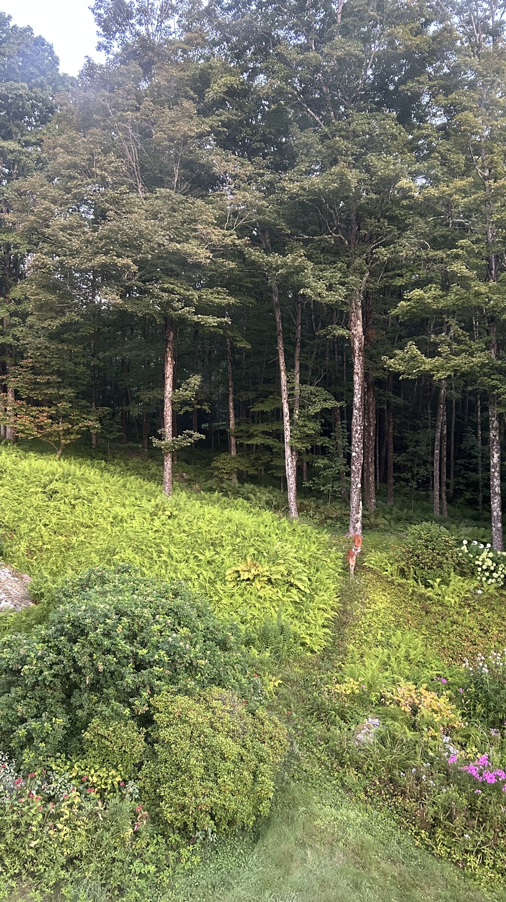
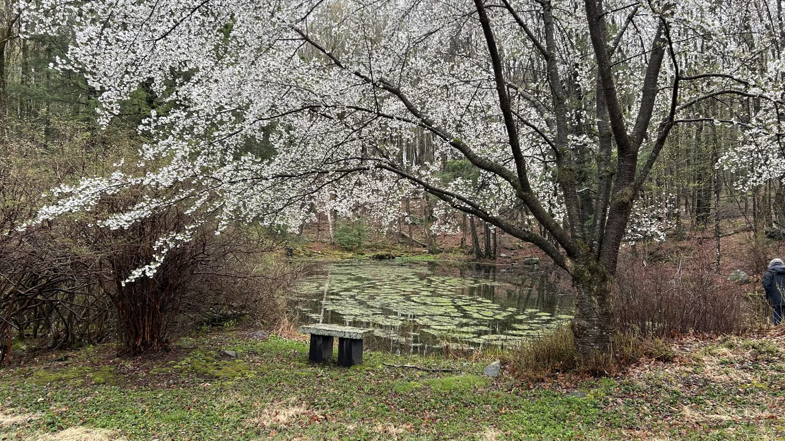

What We Offer
Restorative Experiences for Body & Mind
Each offering at SYS is designed to deepen your connection with the forest and with yourself.

Peaceful Stays
Rest in comfortable accommodations nestled in the heart of the woodland. Wake to birdsong. Sleep under the stars.
Learn More

Forest Bathing
Guided Shinrin-Yoku walks led by certified nature therapy guides. Let the forest breathe you back to life.
Learn More

Mindfulness & Meditation
Immersive outdoor meditation, breathwork, and reflection practices rooted in the rhythms of the natural world.
Learn More